Na adolescência, a vida de Assane Diop dá uma guinada radical quando seu pai morre após ser acusado de um crime que não cometeu. Vinte e cinco anos depois, Assane se inspira em "Arsène Lupin, o Ladrão de Casaca" para vingá-lo.


 1 Parte
1 Parte